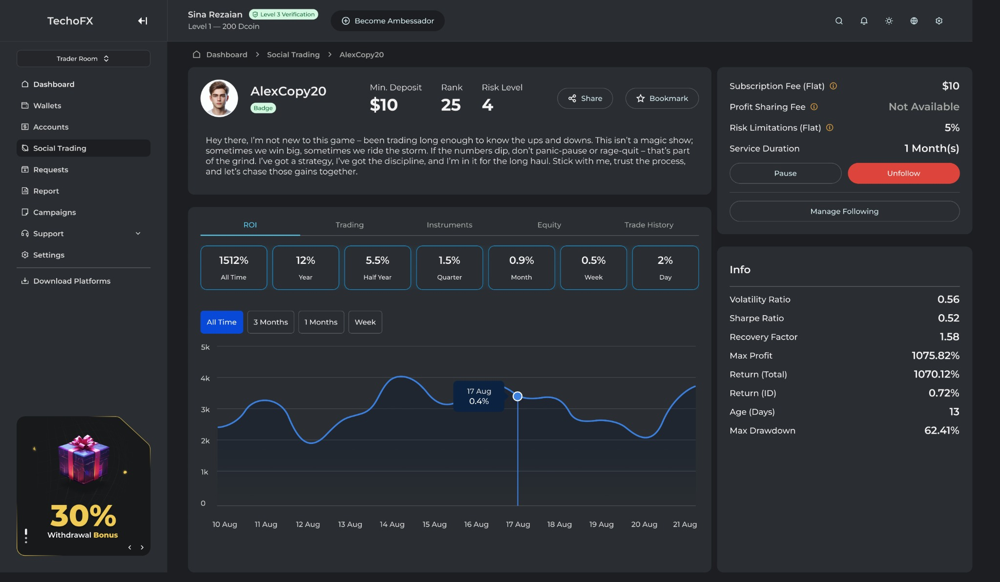
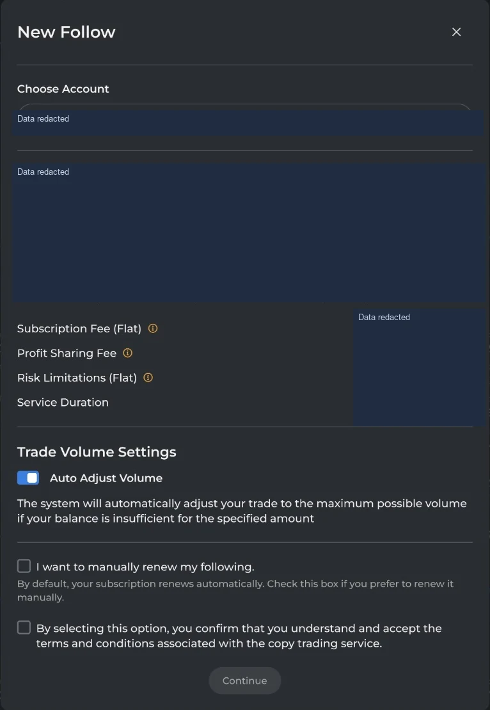

FinTech / Product Work
Social Trading
ProTrader discovery, transparent performance, subscriptions and follower risk controls.

ProTrader discovery: profiles, filters, watchlists and following actions.
Product Overview
A social-trading product connecting ProTraders and followers through performance information, subscription plans and controlled allocation.
Business Problem
Choosing a ProTrader requires more than a headline return. Followers need understandable performance information, subscription terms and control over how their account participates.
Target Users
Followers evaluating trading strategies, ProTraders offering subscriptions, and brokerage teams managing qualification and operating rules.
My Role & Ownership
At TopFast, I lead product strategy, roadmap priorities and cross-functional teams for the social-trading product. I work with Product Owners, designers and engineers to connect follower and ProTrader needs with brokerage operating requirements.
Product Discovery & Strategy
The product direction separates discovery, allocation, subscription models and governance. My leadership centers on coordinating these priorities across the teams responsible for product definition, design and delivery.
Key Product Decisions & Capabilities
Followers discover and filter ProTraders, review performance and subscription terms, choose an account and set allocation and risk controls. The following workflow includes trade-volume settings, renewal choices and consent. Fixed or performance-based plans support different subscription models.
Delivery & Cross-functional Collaboration
I coordinate Product Owners, product designers and cross-functional engineering squads around roadmap priorities and role ownership. Product planning considers both the customer journey and the brokerage teams governing it.
Outcomes & Product Value
The product brings performance review, subscription terms and participation controls into a coherent follower journey. It gives users more context for selecting a ProTrader and managing their involvement.
Product Screens
Explore the interfaces and workflows below.
View full image ↗

View full image ↗

View full image ↗